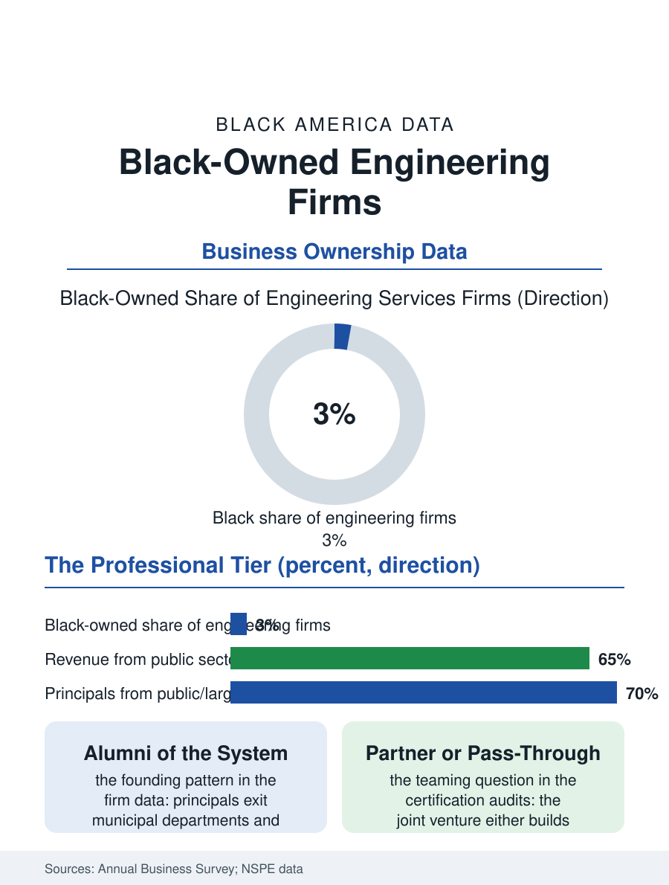

Black Business
The Stamp: Black-Owned Engineering Firms
The engineer's stamp is legally identical in every hand, and the Black firms holding it design the water and transit systems of their own communities. The engineering file.

Black-owned engineering firms occupy the professional services tier where the credential is absolute and the clients are institutions: civil, mechanical, electrical, and environmental firms whose stamps authorize the built environment. The business census counts them in the hundreds of employer firms, small against the industry's giants, concentrated in the public infrastructure market where their certifications carry formal value. This article reads the engineering file.
The Stamp and the Short List
Engineering's barrier is licensure plus reputation: the professional engineer's stamp is a legal instrument, the firm's principals must carry it, and the client, a city, a utility, a developer, buys a track record the young firm cannot show, the classic chicken-and-egg of professional services that the public market's diversity architecture was built to interrupt. The Black engineering firm's founding pattern therefore runs through the public sector's own house: the firm's founders are disproportionately alumni of the municipal engineering departments, the utilities, and the large firms' branch offices, carrying their stamps and their project histories into firms of their own when the ceiling of the large organization's partnership track, the industry's least diverse tier in the workforce data, presented itself. The firm's market is the infrastructure file's: water and sewer systems, transportation corridors, environmental remediation, the building systems of the institutional stock, with the federal and municipal certification programs, the disadvantaged business designations, structuring the competition for the public share through goals and set-asides whose administration the construction file's history covers. The private market, corporate facilities and development work, allocates by relationship, and the Black firm's penetration there is the current frontier the trade associations track, the supplier diversity officers of the utilities and the manufacturers being the door the public market's record is supposed to open.
Scale, Software, and the Joint Venture
The industry's economics squeeze the small firm from the technology side: the design software's licensing, the building information modeling platforms, and now the AI-assisted design tools carry fixed costs that amortize across billable heads, so that the small firm's survival technology is the niche and the teaming arrangement, the joint venture with the prime firm that satisfies the client's scale requirement and the program's participation goal simultaneously, an arrangement whose terms decide whether the Black firm builds its own track record or rents its certification to the prime's, the distinction the certification audits exist to police. The receipts data show the result: Black-owned engineering firms post receipts per firm well below the industry average, their employment concentrated in the civil disciplines of the public market, their growth path the slow conversion of subcontracted scopes into prime roles one delivered project at a time. The workforce pipeline runs underneath: the firm's principals are drawn from the engineering graduate pool whose Black share the education file counts in the low single digits, so that the firm's founding generation is numerically precious, each principal the product of the leakiest pipeline in the STEM files, and the firm's mentorship of the next cohort, the internships, the NSBE chapter sponsorships, functioning as industry infrastructure rather than charity in the profession's own understanding.
Building What the Community Lives In
The engineering file closes on the firm's distinctive civic position: the Black engineering firm designs the water plants, the transit corridors, and the flood control of the very communities the infrastructure files show historically underserved, and the firm's principals sit in the project meetings where the alignment and the alignment's dislocations are decided, a seat at the table whose absence, in the highway era's routing decisions, the urban geography still records. The current infrastructure cycle, the water and transit and resilience programs of the recent federal era, is the largest market the Black engineering firm has ever faced, and the file's open question is the conversion rate, how much of the design dollar reaches the firms whose stamps this file counts, against the prime-dominated structure the joint venture market makes the default. The census counts the firms in the hundreds, their receipts a rounding error of the industry's total, their stamps legally identical to the giants'. That identity is the file's closing datum: the stamp does not know the race of the hand that holds it, the calculations check or they do not, and the profession, alone among the business section's trades, built its gate out of a standard the qualified can meet in the open. The firms that hold the stamp are the pipeline's survivors twice over, and the infrastructure of Black America's next century will bear a share of their seals, growing at exactly the rate the public market's promises are kept.
More in Black Business
Black-Owned Businesses: Counts, Receipts, and the Representation Gap
About 161,000 Black-owned employer firms and three million solo ventures: how the Census Bureau counts Black business ownership, where firms concentrate, and the gap between population share and business share.
Black Median Net Worth: The Wealth Gap in Federal Reserve Data
The Federal Reserve puts Black median family net worth at $44,900, against $285,000 for White families — about 16 cents on the dollar. The widest gap in economic data.
Black Buying Power: The $1.8 Trillion Consumer Economy
Black buying power is estimated at about $1.8 trillion — larger than the economy of most nations. What the figure measures, who produces it, and what it buys.
Source: U.S. Census Bureau, Annual Business Survey for engineering services; National Society of Black Engineers and industry workforce data.